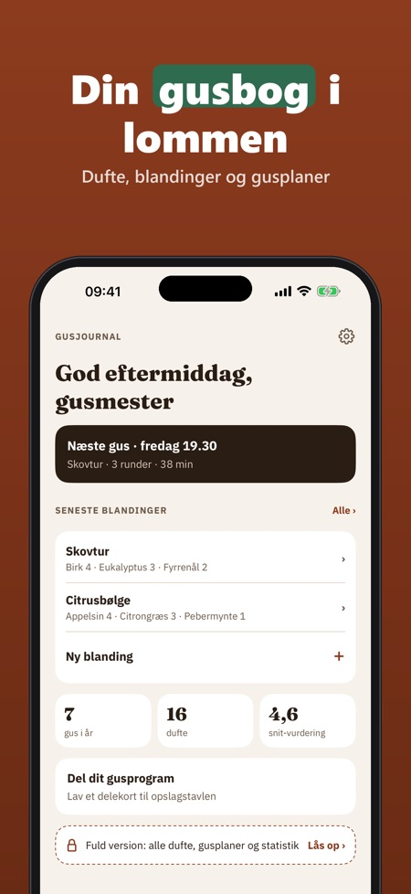
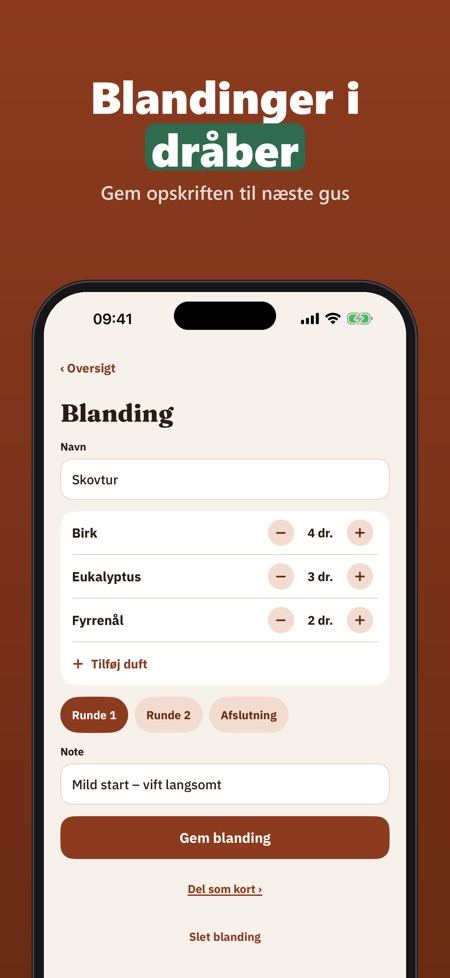
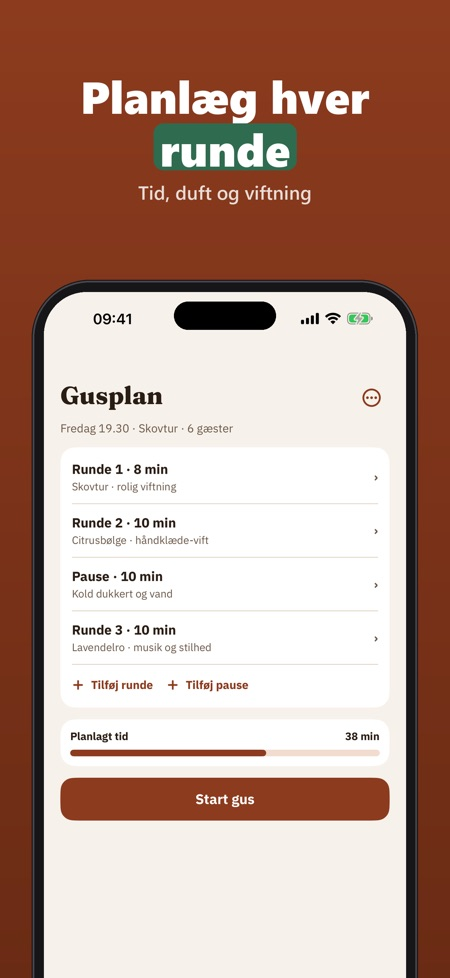

Gusjournal er notesbogen til dig, der laver saunagus: dufte, blandinger, gusplaner og logbog samlet ét sted – også uden internet i saunaen.



En notesbog til saunagus med duftbibliotek, blandinger, gusplaner, timer og logbog.
Ja, Gusjournal virker uden internet, så den kan bruges i saunaen.
Duftbiblioteket har 21 dufte med noter, og du kan føre dit eget lager og din egen dosering.
Logbogen, 10 dufte og 3 blandinger kan bruges uden køb.
Nej. Fuld version er et engangskøb, der låser alle dufte, gusplaner med timer, statistik og delekort op.
Nej, Gusjournal er en notesbog. Følg altid producentens anvisning for æteriske olier.
Gusjournal er notesbogen til dig, der laver saunagus: dufte, blandinger, gusplaner og logbog samlet ét sted.
Logbogen, 10 dufte og 3 blandinger kan bruges uden køb. Fuld version er et engangskøb, der låser alle dufte, gusplaner med timer, statistik og delekort op. Intet abonnement.
Gusjournal er en notesbog og giver ikke sundhedsråd. Følg altid producentens anvisning for æteriske olier.